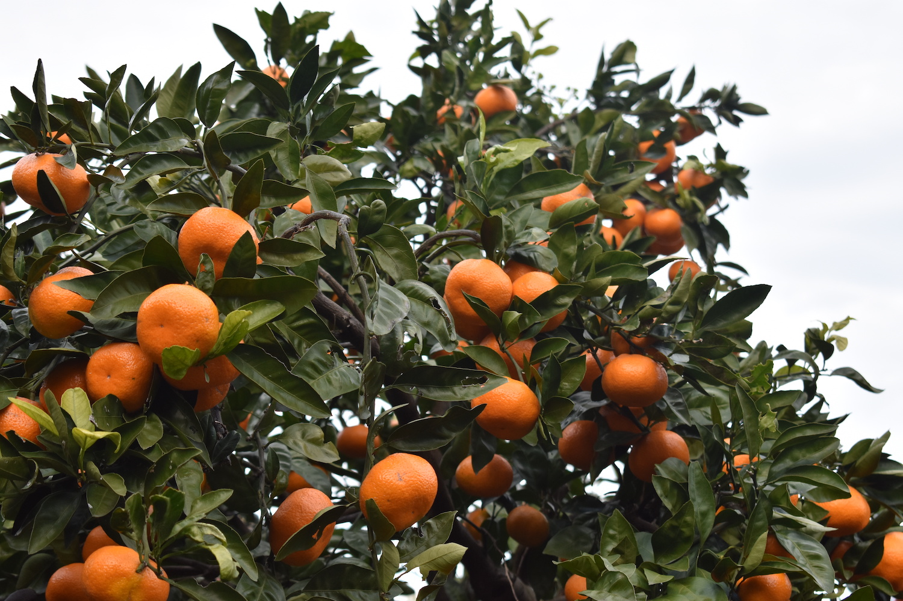
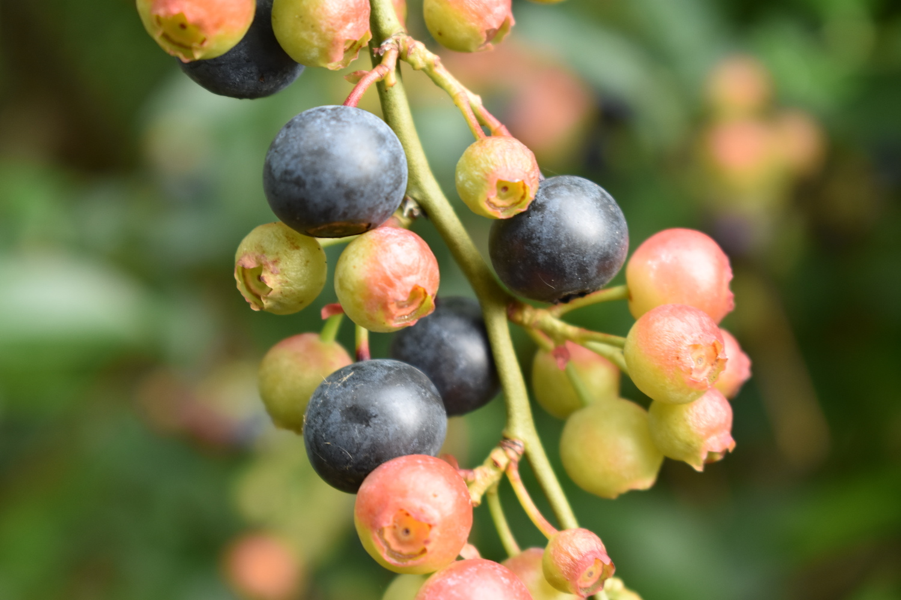

入会を検討している学生へ
東京大学Agrlienは、一年中新規メンバーを受け付けています。大学や学年、年齢は不問で、以下のような方が入会可能です。
・大学または大学院に所属している学生
・継続して参加できる方
（活動場所は神奈川・東京）
入会を検討している方には、まずは体験に来てもらうことをお勧めしています。LINEアカウントより体験希望の旨をご連絡ください。直近の活動予定などをお知らせします。
入会の流れ
入会の際は以下の２つを行って頂きます。
① メンバーのLINEグループへの参加
② Slackのワークスペースへの参加
入会費・年会費は現在ありません。LINEグループ等への参加の方法などは個別にお知らせするので、LINEアカウントより入会希望の旨をお知らせください。
LINEアカウントの登録
以下のURLまたはQRコードよりLINEアカウントを登録の上、ご質問や体験・入会希望の旨を気軽にご連絡ください。
https://lin.ee/4DyRtg7zK
新歓用資料
2021年度の新歓で使用した資料です。
よくある質問
Q. 東大以外の学生でも入会できますか？
A. はい。東大以外のメンバーもたくさんいます。
Q. 新一年生以外でも入会できますか？
A. はい。学生であれば何年生でも新規入会できます（学部の途中から入会する学生もたくさんいます）
Q. 活動頻度はどのくらいですか？毎回参加はできなくても入会は可能ですか？
A. 活動頻度は月２回〜程度です。毎回必ず参加する決まりはありません。
Q. 入会金や年会費はありますか？
A. ありません（2021年度）
Q. 活動にどのくらいお金かかりますか？
A. 畑に行く時の交通費などは販売の売上から負担しています。お昼代やちょっとした交通費以外あまりかかりません。
サポーター制度
東京大学Agrlienは、社会人サポーターを募集しています。ご支援いただいた皆様には、農産物や収穫体験をご提供します。募集詳細は以下の通りです。
支援金額 30,000円
特典①
かながわブランド「下中玉ねぎ」100kg
特典②
下中玉ねぎの植え付け・収穫体験（秋・春）
特典③
四季の収穫体験（筍堀り・ブルーベリー狩り・イモ掘り・みかん狩り）

支援金額 50,000円
特典①
かながわブランド「下中玉ねぎ」200kg
特典②
下中玉ねぎの植え付け・収穫体験（秋・春）
特典③
四季の収穫体験（筍堀り・ブルーベリー狩り・イモ掘り・みかん狩り）

ご興味のある方は、下記フォームをご記入ください。
ご質問などは下記メールアドレスに気軽にご連絡ください。
yayoi.dining@gmail.com